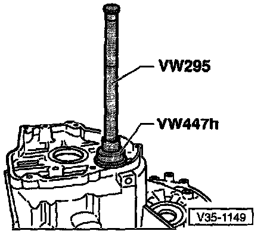
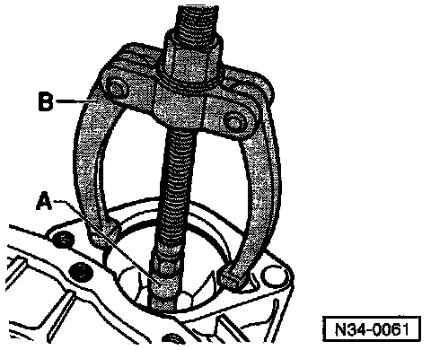
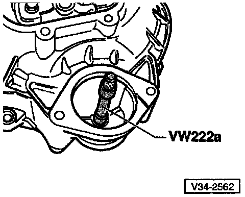
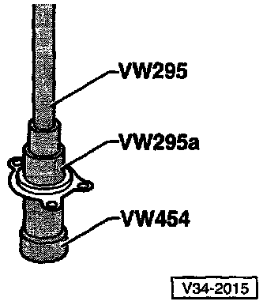
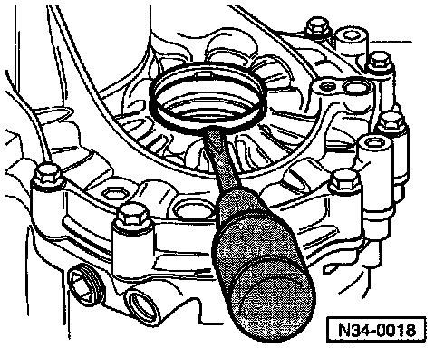

Servicing Transmission Housing/Clutch Housing

1 - Transmission housing
- If replaced, adjust input shaft and differential
2 - Needle roller bearing for output shaft

Removing Output Shaft Needle Bearing

Driving in and seating needle roller bearing for output shaft
- Secure needle roller bearing in transmission housing by staking with a punch at three points, 120° apart
3 - Oil filler plug (without magnet)
- Tightening torque: 25 Nm (18 ft lb)
4 - Outer race, tapered roller bearing for output shaft
- Removing and installing -- Ref Output Shaft Service and Repair
- If replaced, adjust output shaft
5 - Shim -- for output shaft
6 - Shim -- for input shaft
7 - Outer race, tapered roller bearing -- for input shaft
- Removing and installing -- Ref Input Shaft Service and Repair
- If replaced, adjust input shaft
8 - Outer race, tapered roller bearing -- for input shaft
- Removing and installing -- Ref Input Shaft Service and Repair
9 - Needle bearing
- Removing and installing -- Ref Reverse Gear Shaft Service and Repair
10 - Dowel sleeve (quantity: 2)
11 - Starter bushing
- Can be replaced without removing transmission

Removing Starter Bushing
- A = Internal puller, 14.5-18.5 mm e.g. Kukko 21/2
- B = Counter support e.g. Kukko 22/1

Installing Starter Bushing
12 - Clutch housing
- When replacing, adjustments are necessary
13 - 0-ring (Always replace)
- Install on clutch release bearing guide sleeve (14) and lubricate with multi-purpose grease
14 - Guide sleeve (with oil seal)
- To change oil seal, remove guide sleeve

Removing Guide Sleeve Oil Seal

Installing Guide Sleeve Oil Seal
15 - Self-locking socket-head bolt (Always replace)
- Tightening torque: 20Nm(15 ft lb)
16 - Speedometer drive
- Tightening torque: 30 Nm (22 ft lb)
17 - Oil drain plug (without magnet)
- Tightening torque: 25 Nm (18 ft lb)
18 - Outer race, tapered roller bearing for differential
- Removing and installing -- Ref Differential, Manual Transmission Service and Repair
- If replaced, adjust differential
19 - Magnet (located in housing, secured in place by surface of mating housing)
20 - Outer race, tapered roller bearing for differential
- Removing and installing
- If replaced, adjust differential
21 - Shim for differential
22 - Sleeve for oil seal (23)
- Installed on transmissions with springs behind axle flange shafts

Removing Sleeve for Oil Seal
- Pry out with a screwdriver

Installing Sleeve for Oil Seal
- A = Threaded rod from seal installer 3066
- B = M12 nut with washer
- Screw threaded rod (A) into differential threaded piece
- Pull sleeve in onto stop with thrust piece 3124 by turning nut (B)
NOTE: When transmission is disassembled, press sleeve in with thrust piece 3124 onto stop.
23 - Oil seal
- Replacing -- Ref Differential Side Seal, Manual Transmission Service and Repair
- Installed on transmissions with springs behind axle flange shafts
24 - Oil seal
- For transmissions without springs behind axle flange shafts
- Replacing -- Ref Differential Side Seal, Manual Transmission Service and Repair